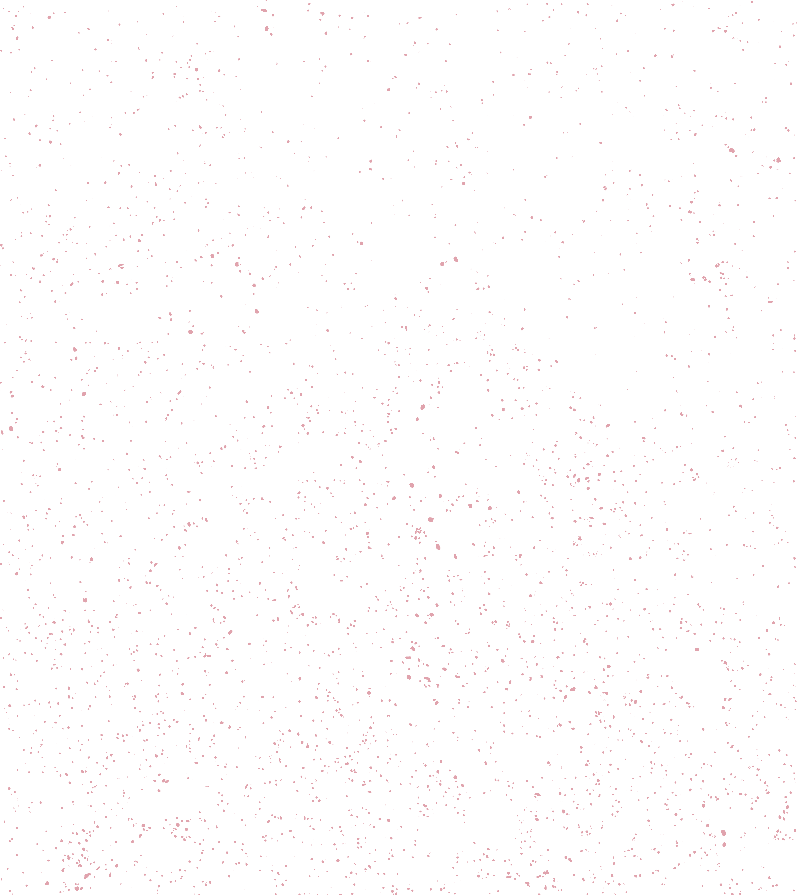
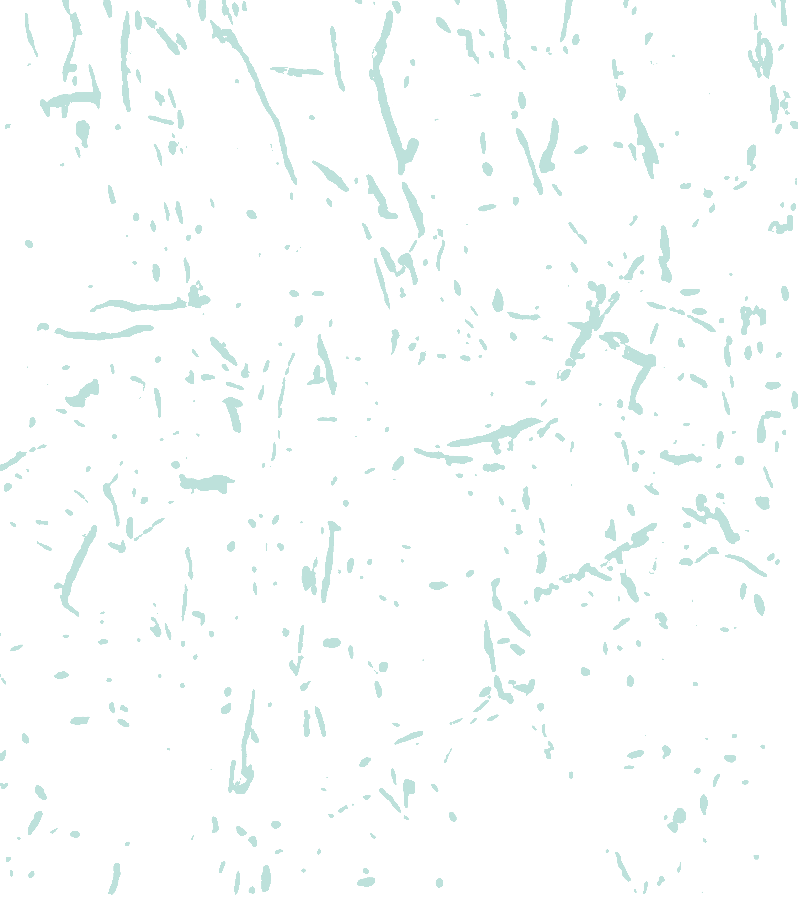
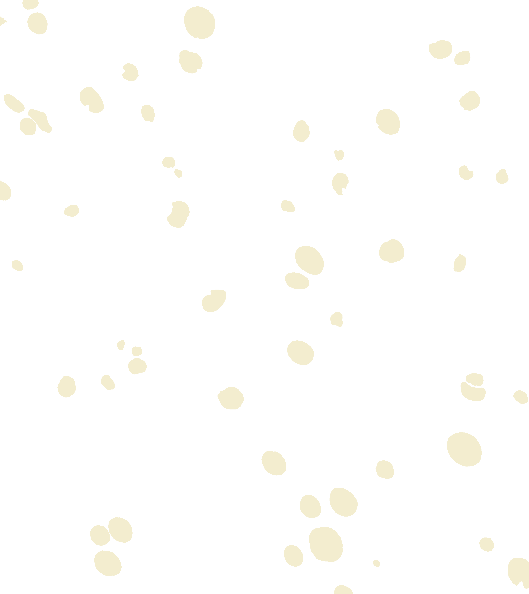
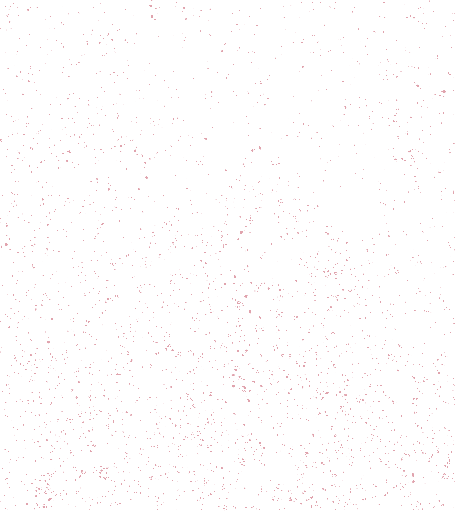
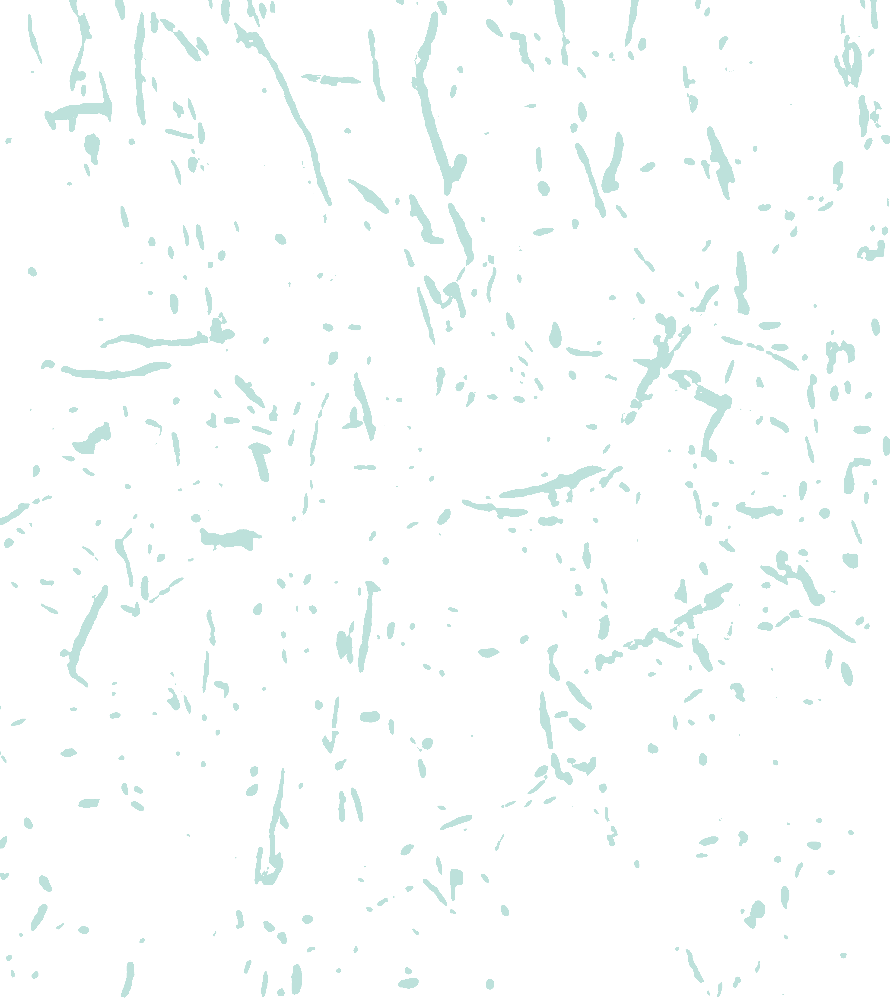
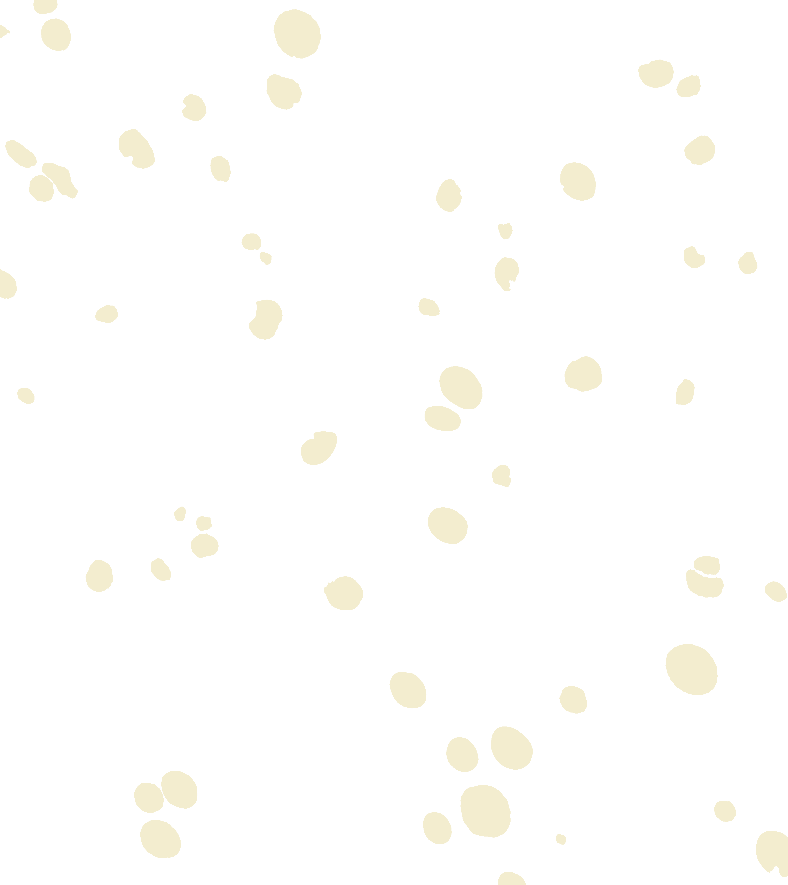

Nelson D. Medina
Neuroscientist · Postdoctoral Trainee
I am a neuroscientist working at the intersection of function, structure, and computation. My research asks how the brain stores and produces learned behavior—and recently, specifically, whether a memory can be read from the wiring diagram of a brain.
I have training in patch-clamp electrophysiology, Hodgkin–Huxley neural modeling, calcium imaging, and extracellular recordings from my PhD work. Now based at the MRC Laboratory of Molecular Biology in Cambridge, UK, in the lab of Dr. Joergen Kornfeld, I use serial-section electron microscopy to reconstruct neural circuits at synapse resolution.
Connectomes alone may be insufficient to explain behavior—we also need to understand the biophysical rules that bring circuits to life. The zebra finch song system, a compact circuit driving a single learned behavior, is an ideal model to bridge this gap.
Research
Found that rebound excitation of premotor neurons in zebra finch HVC correlates with temporal features of learned song. Built Hodgkin-Huxley network models linking intrinsic neuronal properties to sequence detection and song timing.
Analyzed dendritic synaptic innervation patterns in the MICrONS dataset (1 mm³ of mouse V1). Developed a simplified wafer-based method for direct collection of thousands of ultrathin brain sections onto silicon wafers.
No study has linked an individual memory to a synaptic-level wiring diagram. My work in the Kornfeld Lab aims to change that by reconstructing the zebra finch premotor–motor pathway (HVC→RA) at synapse resolution, paired with in vivo calcium imaging from the same animals during singing. The central question: can a learned memory—a bird’s unique song—be read directly from a connectome?
Using a hybrid-resolution strategy on a multibeam SEM, the premotor nucleus HVC and motor nucleus RA are imaged at 10 nm isotropic resolution, with connecting axon tracts at 15 nm. Functional recordings anchor the structural data: two-photon calcium imaging captures HVC activity during natural singing, and co-registration maps those neurons into the EM volume. Automated segmentation, synapse detection, and biophysical modelling then test whether connectivity alone can reproduce the temporal structure of vocal output.
Tools
MOSS
Microscopy Oriented Segmentation with Supervision
Interactive PyQt6 tool for microscopy image segmentation with real-time U-Net model training.
View on GitHubBackground segmentations each produced with just minutes of simultaneous annotation and training:
Mitochondria Myelinated Axons NucleiPublications
-
Submitted
DRIFT-EM: Direct retrieval of ultrathin serial sections by ionizer-facilitated transfer for volume electron microscopy
Submitted
-
In prep
Synaptic rearrangement in adult dentate gyrus
Manuscript in preparation
-
2025
Local Dendritic Landscape of Mouse V1
Preprint, bioRxiv
- 2024
-
2018
Lateral septum growth hormone secretagogue receptor affects food intake and motivation for sucrose reinforcement
American Journal of Physiology
Contact
MRC Laboratory of Molecular Biology
Francis Crick Avenue, Cambridge CB2 0QH, UK
Kornfeld Lab · Neurobiology